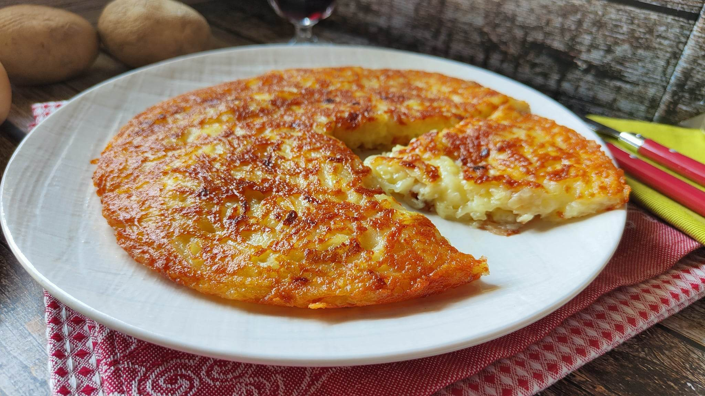

Per fare il frico, per prima cosa grattugia il formaggio a julienne. Lava le patate, mettile in una pentola senza sbucciarle e coprile con acqua fredda. Al bollore, cuocile per circa 5 minuti, scolale e falle raffreddare. Elimina la buccia, poi grattugiale a julienne. In una padellina da 18 cm di diametro fai appassire 15 g di cipolla in 20 g di olio per 5 minuti; aggiungi 200 g di patate, alza la fiamma e rosola per 5 minuti. Unisci 80 g di formaggio e amalgama fino a scioglierlo. Con un cucchiaio livella la superficie per formare una sorta di frittatina. Cuocila per circa 5 minuti a fiamma viva fino a quando vedrai una crosticina croccante e dorata. Copri la padella, gira il frico e continua la cottura per cuocerlo anche dall’altro lato.


Ritorna alla home page